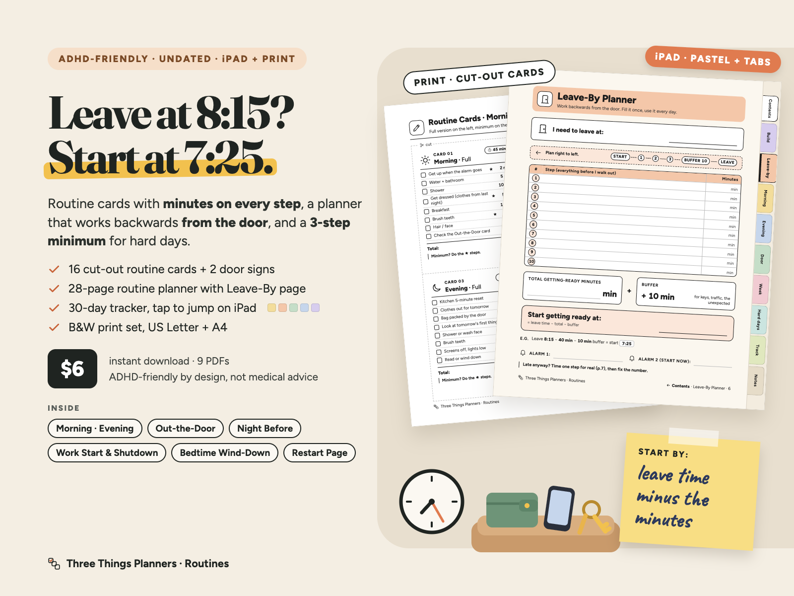
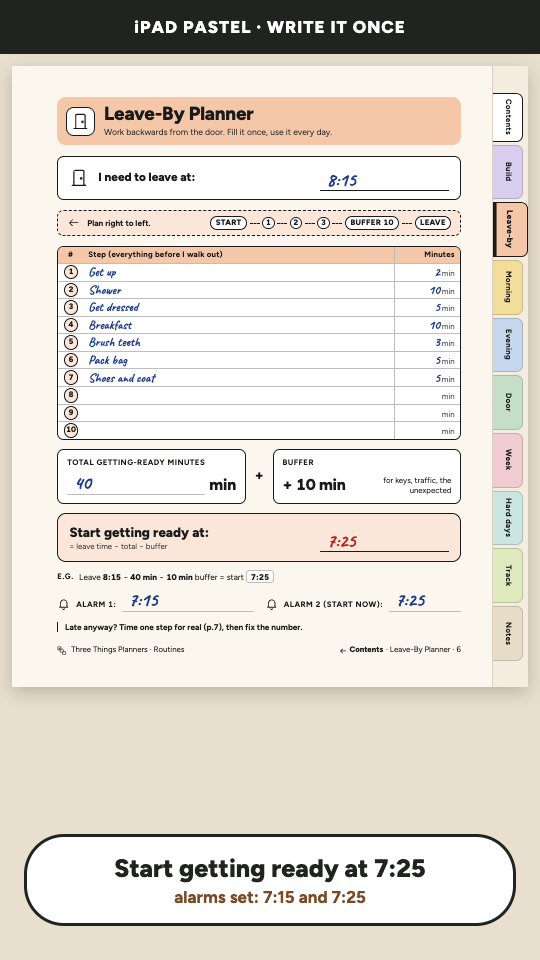
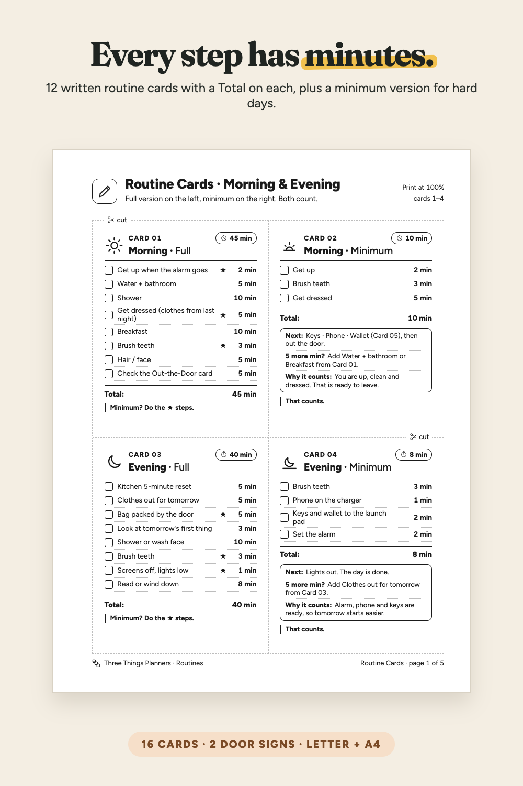
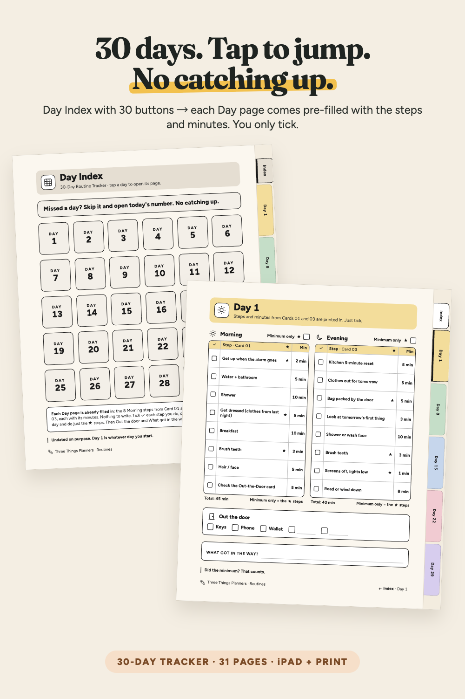
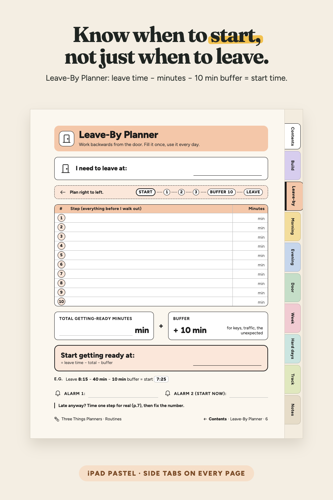
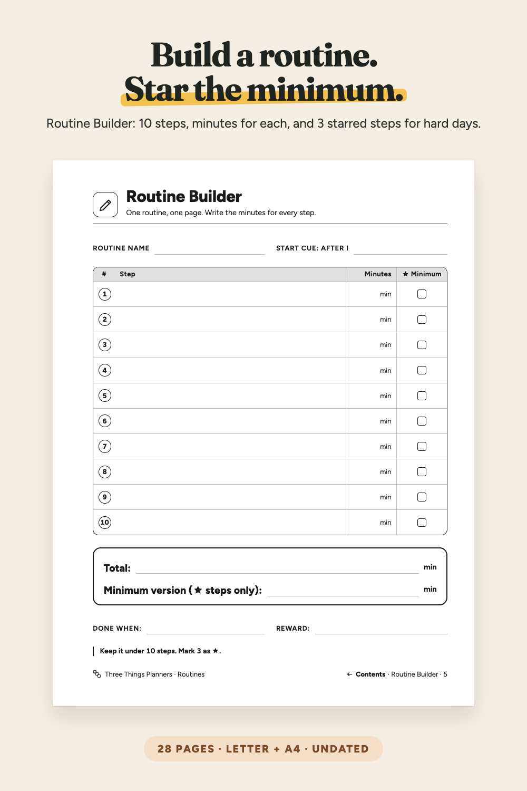
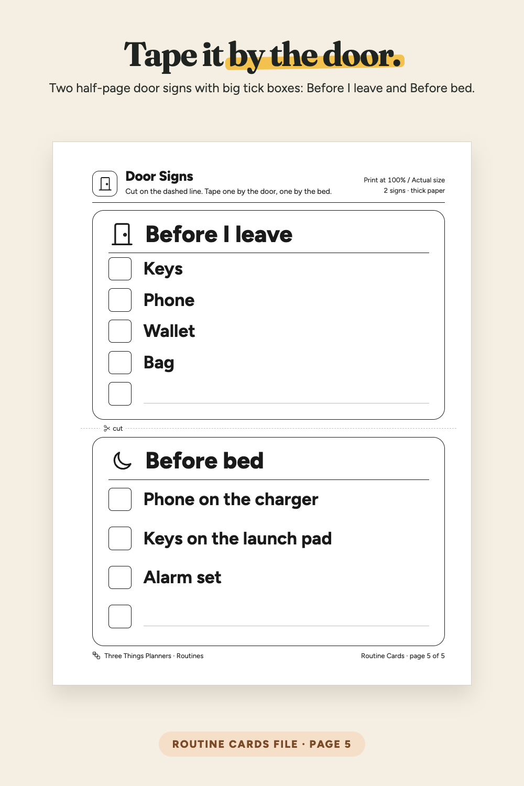
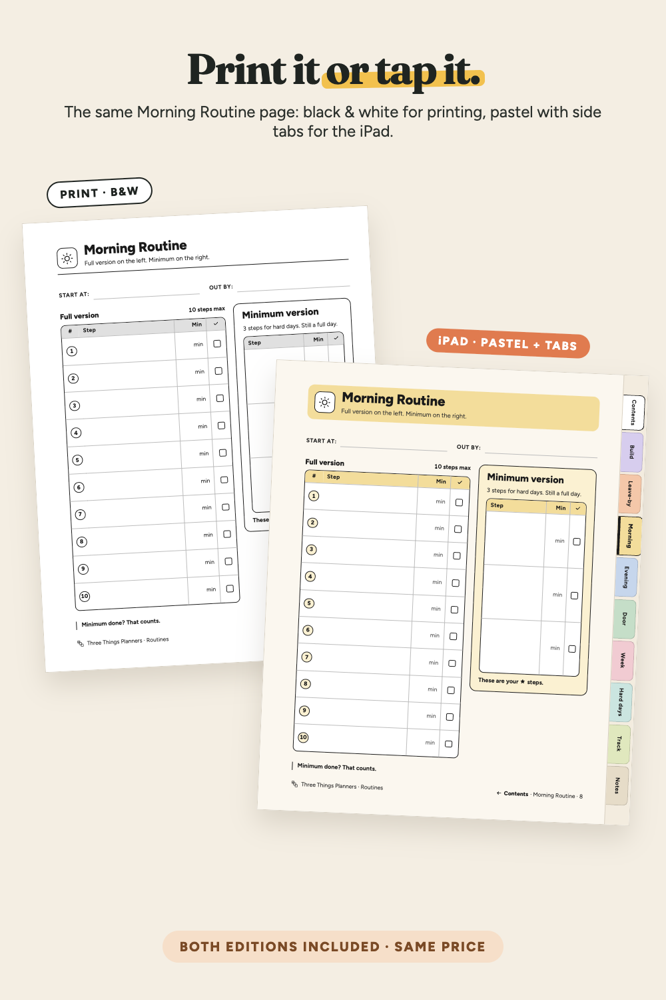
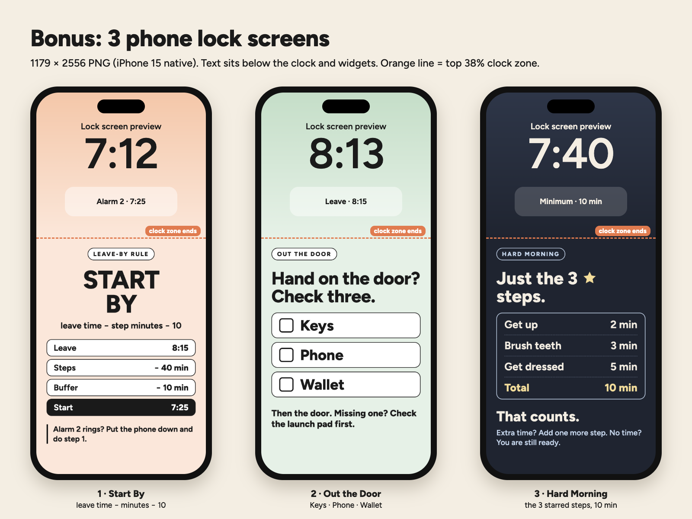
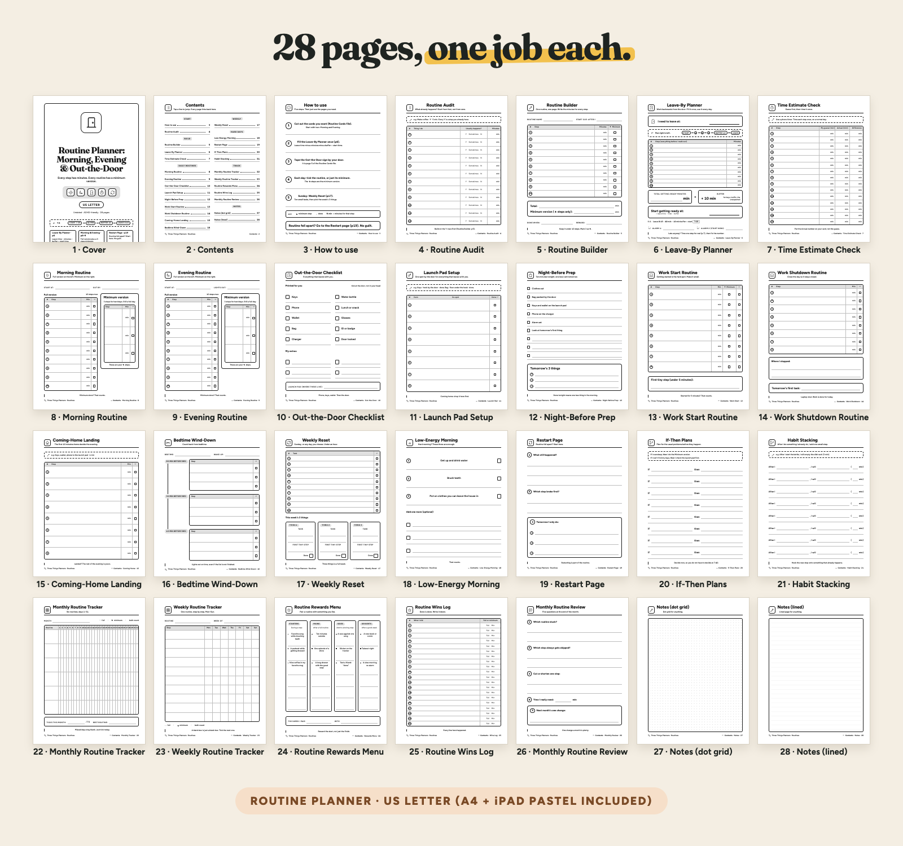

Every step has minutes, so you know when to start. 12 ready-made routine cards, a Leave-By planner and a 30-day tracker. US Letter + A4 + iPad.
From Three Things Planners, the planner imprint of Hustle Studio. New shop, no reviews yet.

$6.00 USD, one-time payment, instant download. No subscription.
Buy now: $6 one-time Not sure yet? Get 3 real pages free (PDF, no email)Satisfaction guarantee: if a file won't open or the kit isn't right for you, you get your money back. 14-day full refund, no questions asked: email chenphien@gmail.com.
🔒 Secure checkout: Waffo Pancake is our merchant of record. It takes the payment (major cards accepted), handles tax and sends your receipt; we never see your card details. The checkout page shows the product as "ADHD-Friendly Routine Cards: Morning, Evening & Out-the-Door", $6.00.
14-day refund, no questions asked. If the kit doesn't work for you, email chenphien@gmail.com (Three Things Planners support) within 14 days of purchase with your order email for a full refund. We aim to reply within 2 business days, and the refund goes back to your original payment method through Waffo Pancake (see Terms). Yes, the support address is a Gmail inbox: we're a small studio and a real person reads it. Your payment, receipt and refund are processed by Waffo Pancake, not by that inbox.
Never heard of Waffo Pancake? It is the payment company that sells our files as merchant of record: it runs the card checkout, charges the right tax, emails your receipt and issues refunds. We only receive your order email and the product name.
Try before you buy: the free 3-page sample (PDF) has a filled-in Leave-By Planner example (leave 8:15, 40 minutes of steps, 10-minute buffer, start 7:25), two real routine cards (Morning · Minimum and Out the Door) and the Low-Energy Morning page. US Letter, no email needed. You can also flip through it on this page.
A new shop, honestly. We have no reviews yet and we won't invent any. Instead, every image below is a real page, and the sample lets you print three of them before you pay. ADHD-friendly by design; not medical advice. It is a planning tool and makes no promises about habits or results.
Every image is rendered from the same page source as the PDFs. No buyer photos or reviews yet: the shop is new, and we won't invent any.









The actual free-sample PDF: filled-in Leave-By example, Morning · Minimum and Out the Door cards, Low-Energy Morning page. If it doesn't show on your device, download the free sample here.
A short screen recording (about 20 seconds) of the real iPad Pastel pages in a phone-size browser viewer: the Leave-By page is filled in with handwriting-style text added on screen (leave 8:15, 7 steps, total 40, start 7:25, alarms 7:15 and 7:25), then the tracker Index → Day 1 (pre-filled steps) → two steps ticked. It was not recorded inside a note app.
One ZIP, ADHD-Routine-Cards_All-Files.zip, with 12 files: 9 PDFs + 3 PNG phone wallpapers. Each file is also a separate download after payment.
| File | Pages | Size / what it is for |
|---|---|---|
| Routine-Planner_Letter.pdf | 28 | Planner, black & white, US Letter 8.5 × 11 in. Tap a Contents line to jump, tap Contents in the footer to go back. |
| Routine-Planner_A4.pdf | 28 | Planner, black & white, A4 210 × 297 mm, laid out for A4. Same Contents and footer links. |
| Routine-Planner_iPad-Pastel.pdf | 28 | Planner for the screen: soft section colours, 10 tap-to-jump side tabs on every page |
| 30-Day-Routine-Tracker_Letter.pdf | 31 | Day Index + Day 1–30 (pre-filled), US Letter. Tap a Day button to open that day, no copying pages. |
| 30-Day-Routine-Tracker_A4.pdf | 31 | Day Index + Day 1–30 (pre-filled), A4 |
| 30-Day-Routine-Tracker_iPad-Pastel.pdf | 31 | Tracker for the screen: 6 tap-to-jump side tabs on every page |
| Routine-Cards_Letter.pdf | 5 | 16 cards (12 written, 4 blank), 4 per page with dashed cut lines, + 2 door signs, US Letter |
| Routine-Cards_A4.pdf | 5 | 16 cards (12 written, 4 blank) + 2 door signs, A4 |
| README.pdf | 2 | File list, print settings, GoodNotes / Notability import steps, license, refunds |
| Phone-Wallpaper-1_Start-By_1179x2556.png | PNG | Bonus lock screen, 1179 × 2556: leave time − minutes − 10 |
| Phone-Wallpaper-2_Out-the-Door_1179x2556.png | PNG | Bonus lock screen, 1179 × 2556: Keys, Phone, Wallet |
| Phone-Wallpaper-3_Minimum_1179x2556.png | PNG | Bonus lock screen, 1179 × 2556: the 3 starred steps, 10 min |
The 28 planner pages: 1 Cover · 2 Contents · 3 How to use · 4 Routine Audit · 5 Routine Builder · 6 Leave-By Planner · 7 Time Estimate Check · 8 Morning Routine · 9 Evening Routine · 10 Out-the-Door Checklist · 11 Launch Pad Setup · 12 Night-Before Prep · 13 Work Start Routine · 14 Work Shutdown Routine · 15 Coming-Home Landing · 16 Bedtime Wind-Down · 17 Weekly Reset · 18 Low-Energy Morning · 19 Restart Page · 20 If-Then Plans · 21 Habit Stacking · 22 Monthly Routine Tracker · 23 Weekly Routine Tracker · 24 Routine Rewards Menu · 25 Routine Wins Log · 26 Monthly Routine Review · 27 Notes (dot grid) · 28 Notes (lined)
Import the two iPad Pastel files into a PDF note app such as GoodNotes or Notability. Tap a Contents line, a Day button or a side tab to jump; tap Contents or Index at the bottom of a page to go back. In GoodNotes, links respond in read-only mode; in Notability, use the selection or hand tool. The black & white files have the same Contents, Index and footer links, without the tabs.
Is this a physical product?
No. It's an instant download: 9 PDFs and 3 PNG wallpapers in one ZIP. Print the black & white files or use the iPad Pastel files in a PDF note app.
Which size do I print?
US Letter for the US and Canada, A4 for the UK, Australia, Europe and elsewhere. Both are included and each is laid out for its own paper. Print at 100% / Actual size.
Do the links work in GoodNotes and Notability?
They are standard PDF internal links (Contents lines, Day buttons, side tabs, footer links back). In GoodNotes, links respond in read-only mode; in Notability, use the selection or hand tool. The demo video shows the same pages in a browser viewer, not inside those apps.
My routine is different from the printed one. Can I still use the 30-day tracker?
The Day pages print the steps from Cards 01 and 03. If yours differ, write your routine once on a blank card (13–16) and tick the rows in order; the README explains this. The Morning and Evening pages in the planner are blank for your own steps.
Can I reuse the cards?
Yes: print on card stock or cover with clear tape, and tick with a dry-erase marker.
Who is Waffo Pancake, and is checkout safe?
Waffo Pancake is our merchant of record: it runs the card checkout, handles tax, sends your receipt and processes refunds. We never see your card details.
What if it doesn't work for me?
Email chenphien@gmail.com within 14 days of purchase for a full refund, no questions asked. We're a new shop with no reviews yet, which is why the free 3-page sample exists.
$6.00 USD, one-time payment, instant download
Buy now: $6 one-time Not sure yet? Get 3 real pages free (PDF, no email)🔒 Secure checkout by Waffo Pancake, our merchant of record: it handles payment, tax and your receipt, and we never see your card details. Satisfaction guarantee: if a file won't open or it isn't right for you, you get your money back. 14-day refund, no questions asked: email chenphien@gmail.com, refunded to your original payment method.